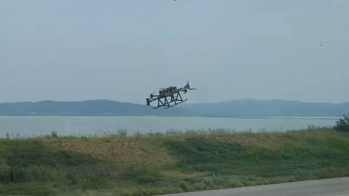

Flight Dynamics & Control
Nonlinear Dynamic Inversion, MRAC, RBF-NN 및 불확실성을 고려한 비행제어.
AEROSPACE GUIDANCE · CONTROL · AUTONOMOUS FLIGHT
비선형 GNC와 sampling-based optimal control을 기반으로, 불확실한 실제 환경에서도 안전하게 동작하는 UAV/UAM 자율비행 시스템을 연구합니다.
장광우
Kwangwoo Jang, Ph.D.
RESEARCH VISION
비행체 동역학, 비선형·적응제어 및 강건제어
최적 유도, 실시간 경로계획, 인지 기반 자율비행
학습·인지·안전성을 통합한 차세대 항공모빌리티
Nonlinear Dynamic Inversion, MRAC, RBF-NN 및 불확실성을 고려한 비행제어.
MPPI/MPC 기반 terrain following, collision avoidance 및 online parameter estimation.
Perception-aware planning, autonomous landing, HILS 및 실제 UAV 비행시험.
Learning-enhanced control, fault tolerance 및 신뢰할 수 있는 UAV/eVTOL/UAM.
EXPERIENCE & EDUCATION
Research Engineer · Air Mobility Research Division
Air Mobility, 온보드 인지 및 무인항공시스템 자율비행 기술 연구개발.
Sampling-Based Motion Planning for Multirotor UAVs
MPPI 기반 정적·동적 장애물 충돌회피, 지형추종 및 path-integral parameter estimation.
Quad-Tiltrotor Transition Flight Control
천이비행 동역학, nonlinear flight control 및 RBF-NN 기반 adaptive control.
비행역학, 자동제어 및 항공우주시스템 전반.
SELECTED RESEARCH

MPPI와 PIPE를 결합해 조종사 특성을 온라인 추정하고 지형추종 과정의 pilot-induced oscillation을 실시간으로 완화.

Actuator time delay로 인한 NDI 제어기의 불안정성을 분석하고 시간지연 여유를 높이는 제어 구조를 제안.
비볼록 비용함수와 MPPI를 활용한 지형추종 유도명령을 3-DOF 및 6-DOF 시뮬레이션으로 검증.
한국항공우주학회지, 51(11), 769–777 · doi.org/10.5139/JKSAS.2023.51.11.769
ADDITIONAL SELECTED WORK
HashEye: a real-time on-drone high-resolution tiny object detection via spatial pruning
Scientific Reports · Co-author
Feedback linearization-based model reference adaptive control for multirotor UAVs under uncertainties from fuel and payload
Proc. IMechE Part G: Journal of Aerospace Engineering · Co-author
SYSTEM INTEGRATION · FLIGHT TEST

2019–2024 · 국방과학연구소 (ADD)
하이브리드 엔진 기반 유·무인 복합 비행 플랫폼 개발에서 8개 연구실의 협업과 시스템 통합을 총괄했습니다.
8개 연구실 간 인터페이스와 일정을 조정하고 시제기 성능평가 및 납품까지 수행.
독자 비행제어 SW와 실시간 자율비행 기능을 ARM 기반 온보드 시스템에 구현.
HILS, 지상 통합시험 및 실제 비행시험을 통해 요구 성능 전 항목을 검증.
고신뢰성 호버바이크 연구개발 및 성공적인 시제기 개발·실증 기여
ADDITIONAL PROJECTS
공력 불확실성과 고도 침하를 고려한 RBF-NN adaptive control을 설계하고 onboard HILS와 비행시험으로 검증.

단안 depth 추정, ROS mission computer 및 강화학습 기반 충돌회피 유도 알고리즘의 성능평가와 통합.
Branch probability를 고려하는 MTS-MPPI를 제안하고 정적·동적 장애물 환경의 3차원 실시간 충돌회피 성능을 분석.
AWARDS
호버바이크 시제기 통합·실증 기여
모범적인 학업 및 연구활동
MEDIA COVERAGE
KAIST 공식 연구뉴스
YTN Science